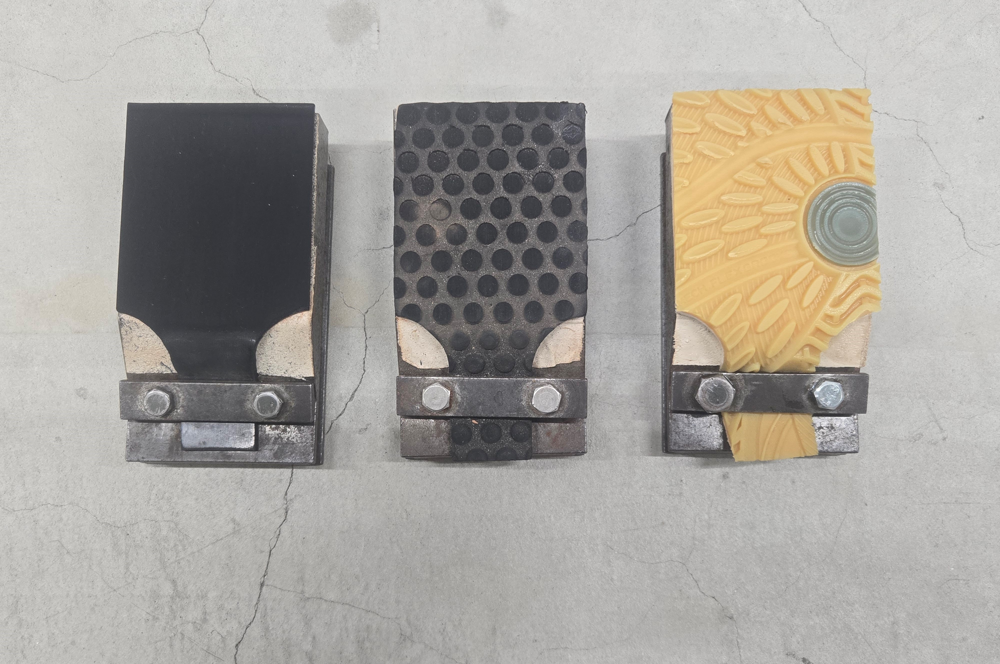

安全性や快適性を保証するために、適切なすべり性能の測定方法を考える。
人々が生活する中で最も接する頻度が高い部位である床は、様々な性能が要求されます。その中でも、安全性や快適性に大きくかかわるすべり性能は生活する中で非常に重要なものです。これまで東京工業大学(現東京科学大学)にかつて存在していた、吉岡研究室や小野研究室、横山研究室などですべりに関する検討が長らく行われてきました。検討の中で開発された"すべり試験機 O-Y・PSM"によって行われるすべり試験は、居住者のすべりに対する感覚に対応する性能試験方法として、床材メーカーなどから信頼される試験方法として確立されています。
本研究室では、過去の研究者たちが紡いできた研究を受け継ぎ、さらに新たな知見を得たり、ほかの研究と結び付けて検討を進めたりすることで、すべりからみた床材の安全性や快適性をより高いレベルで保証することを目指し、研究を続けております。
(上図：すべり試験機O-Y・PSM 下左図：すべり試験に使用するすべり片 下右図：官能検査の様子)